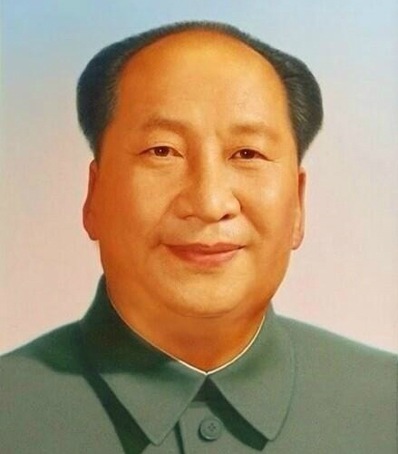

마오쩌둥

중화인민공화국의 국부이자 초대 국가주석으로 1949년부터 1976년 죽을 때까지 집권한 독재자이자 학살자이며 중화민국 입장에선 반란 주동자이다. 인류 역사상 가장 많은 사람을 학살한 사람이다. 학살된 사람이 무려 7700만명이고 2위인 스탈린의 3배가 넘는 사람을 학살했다.
천안문 광장에 걸려있는 대형 초상화의 주인공이다. 국공내전을 승리로 이끌어 중국 공산당이 중국 본토를 차지하는데 큰 역할을 했지만, 집권 기간 동안 학살을 자행했으며, 1958년부터 시행한 대약진운동[5], 1966년부터 시행한 문화대혁명[6]으로 인하여 중국의 발전을 동시에 크게 정체시켰다는 평을 받는다.
중국 현대사에서 가장 중요한 인물이자 가장 많이 분석되는 인물들 중 하나로, 중국 내에서는 그를 '공칠과삼'으로 평가하고 있다. 70% 잘했고, 30% 못했다는 말. 70%는 중일전쟁 동안의 항일 활동과 국공내전의 승리로 공산 중국을 건국하고 강대국으로 만들 발판을 마련했다는 점에서 부여해준 것이고, 30%의 경우 문화대혁명과 대약진운동으로 나라의 발전을 말아먹었다는 점에서 후임 최고지도자 덩샤오핑이 직접 부여해준 것이다.
단, 덩샤오핑의 발언과는 별개로 이 말은 사실이 아니다. 애초에 중국은 마오쩌둥이 아닌 장제스나 다른 사람이 지도자가 되었더라도 강대국으로 가는 길이 그렇게 어렵지 않았을 것이다. 오히려 마오쩌둥의 30%의 과 때문에 중국이 강대국이 될 수 있는 발판을 마련하기는커녕 중국을 한참 퇴보시켰다, 중국의 경제규모는 대약진운동이나 제사해 운동, 문화대혁명 전에 무려 세계 5위였다. 마오쩌둥의 그 30%의 과 때문에 미국, 소련, 대영제국, 프랑스 다음으로 규모가 거대했던[7] 중국의 경제 규모가 세계 13위로 떨어졌다.
사실상 중국을 강대국으로 만든 사람은 덩샤오핑 본인이다. 따라서, 저 평가가 마오쩌둥을 진심으로 좋게 평가했다기보다는 자신의 정치적 위치를 확고하게 하기 위해 정권 창립자인 전임자 마오쩌둥에게 의도적으로 긍정적인 평가를 내린 것이라고 봐야한다. 독재자 중 전임자를 격하하고 오랫동안 독재권력을 유지한 사례는 니콜라에 차우셰스쿠 정도가 아니면 찾아보기 힘들기 때문이다. 그 차우셰스쿠마저 결국 몰락한걸 생각하면..